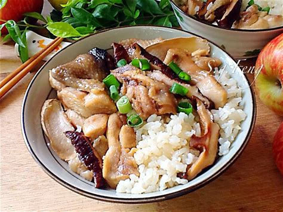
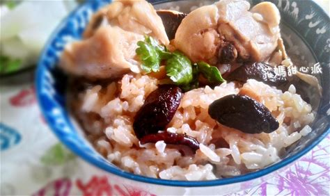
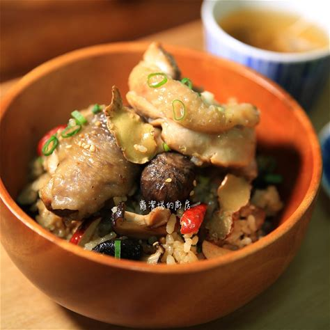

加入香油，小火爆香薑片，煸至微捲曲或稍上色
再加入麻油、雞肉，煎至雞肉上色
加入香菇炒香
嗆入米酒、醬油，加入香菇水、水（80ml）、鹽、白胡椒粉煮滾，再煮約10～15分鐘
糯米一杯，加水0.75米杯煮熟
再將糯米飯與炒熟的料拌勻
用香油煸薑片，因麻油炒久會變苦 糯米也可用白米取代，但水量要改成水：一米杯
  
檸檬胡椒蝦介紹 韓式涼拌山茼蒿介紹 花椰菜濃湯介紹 心得
練習 影片 音樂
Your browser does not support the audio element. Your browser does not support the video tag.